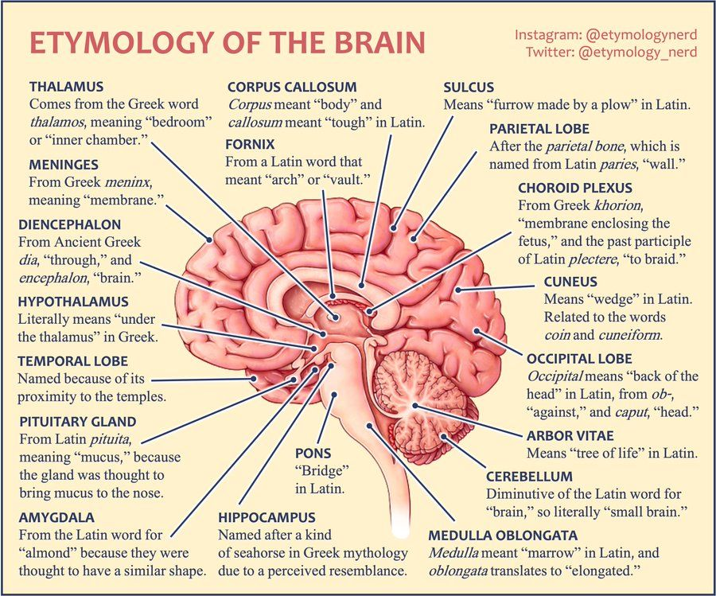
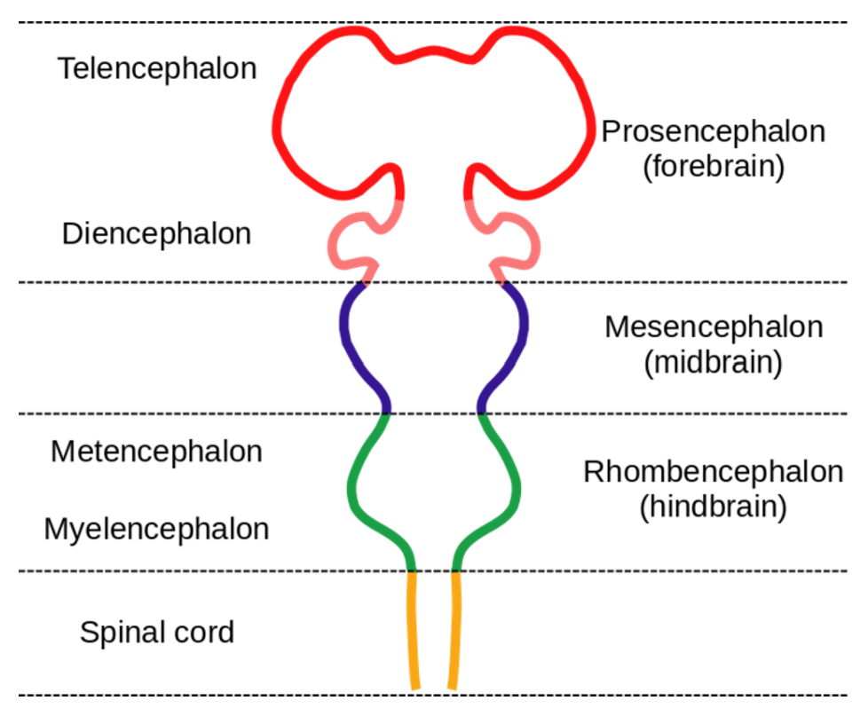
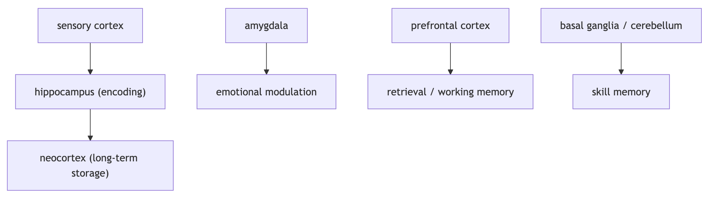

Basic Neuroanatomy
Welcome to the first lesson studying the most powerful and intelligent computer known to date - the brain. We will begin by studying what the brain is exactly. This is called neuroanatomy/brain anatomy. The reason why we start with neuroanatomy is that deep learning does not attempt to model the “mind” itself (yet). However, it closely mirrors how the brain structurally processes the information.
Literacy & Technical Track Content

Task 1:
Read the article below, and answer the following synthesis questions.
Introduction
The human brain is composed of multiple layers, and understanding each part is crucial for learning how brain cognition works. Besides just the chemical communication from neurons we learned from the lecture, the brain organizes information throughout its distinctive structures, each with specific roles and pathways.
First, let’s look at the structure of neuroanatomy. You may have seen an image like this before (source):

The brain has three major regions: Forebrain, Midbrain, and Hindbrain, and the “-encephalon” term reflects an embryological subdivision of the brain. During early embryonic development, the brain primary appears as three vesicles (prosencephalon, mesencephalon, and rhombencephalon) and spinal cord, which then differentiate into more specialized subregions as development proceeds. Since embryological subdivision is the root of all brain structure, developmental origin constrains anatomical boundaries, connectivity, and function in grown human brain.
Now, let’s talk about each region and its subdivisions.
The Forebrain
The Forebrain contains its subdivisions: the Telecephalon and Diencephalon.
The Telecephalon contains the Cerebral cortex, Basal ganglia, and Limbic system, and it supports perception, motivation, and even memory.
The Cerebral cortex is a gray matter which contains its subdivisions of four Lobes and the Insula (visceral sensation).
The four Lobes function differently in learning and cognitive processes
- Frontal lobe; executive function, decision-making, motor planning
- Parietal lobe; somatosensory processing and spatial integration
- Occipital lobe; visual processing
- Temporal lobe; auditory processing, language, and memory
The Insula is a cortical region involved in visceral sensation, interoception, and awareness of internal bodily states.
There is a structure called the corpus callosum, a major white-matter tract within the telencephalon, that connects the left and right cerebral hemispheres and enables information exchange across cortical regions. This lets cerebral hemispheres communicate with each other and integrating perception, action, and cognition into a coherent experience.
Basal ganglia contains its subdivisions Caudate nucleus, Putamen and the Globus pallidus
- Caudate nucleus; processes goal-directed learning, working memory.
- Patumen; related to motor skills, planning and preparation
- Globus palildus
Limbic system contains its subdivisions Amygdala and Hippocampus
- Amygdala; rapid evaluation of sensory information, emotional responses to external stimuli
- Hippocampus; spatial navigation and episodic memory
While the Diencephalon contains Thalamas and Hypothalamas, which control attention and physiological state by regulating signals.
Thalamas routes sensory information to the appropriate cortical areas and modulates attention. Rather than transmitting information itself, the Thalamus filters and prioritizes signals based on relevance and feedback.
Hypothalamus regulates the body’s internal physiological state, such as temperature, hunger, and thirst, and process motivation, arousal, and autonomic nervous system control. It makes sure that our cognition is context-dependent and bodily grounded.
Synthesis Questions
You are walking in the forest at night and you suddenly see something that looks like a snake. Your heart rate increases, you start feeling fear, and then later realize it was just a stick. Using the forebrain structures, explain how this entire process unfolds in the role of each part of the forebrain.Explain why Cerebral Cortex, Basal Ganglia, and the Limbic System cannot be understood independently.
The Midbrain
The Midbrain is divided into Tectum and Tegmentum; where the Tectum is dorsal which contains Superior colliculus and Inferior colliculus, and the Tegmentum is ventral and contains Substantia nigra, VTA(ventral tegmental area) and Periaqueductal gray.
Tectum
- Superior colliculus processes visual stimuli and coordinating rapid movements of the eyes and head. This area supports physical implementation of spatial attention for motor responses.
- Inferior colliculus processes auditory information to sound localization. This area supports reflexive responses to auditory stimuli.
Tegmentum
- The Tegmentum contains the Substantia nigra, which is a dopaminergic nucleus that is functionally connected to the basal ganglia and plays a critical role in movement and reward-based learning (this is what we call as an reinforcement learning!).
- The Tegmentum contains the VTA, a.k.a ventral tegmental area, which is another dopaminergic nucleus within the tegmentum. It involves motivation and reward processing, learning, assigning value to stimuli and actions (also connected with reinforcement learning).
- The Tegmentum contains the Periaqueductal gray, which surrounds the cerebral aqueduct and is involved in defensive, autonomic responses to threat.
Synthesis Questions
How does Mesencephalon integrate sensory information, motor responses and reward processes into coordinated behavior systems?What does it mean that the Midbrain combines a reflex system and a learning system? Define this integration in terms of neural function.What is the role of neural communication in the Midbrain in linking sensory processing, motor responses, and reward-based learning?
The Hindbrain
The Hindbrain contains its subdivisions: the Metencephalon and Myelencephalon.
The Metencephalon contains the Pons and Cerebellum.
- The Pon controls sleep and wakefulness, relaying of signals between the cerebellum and cerebrum.
- The Cerebellum is often called the “little brain” by psychologists since it coordinates movement and balance, and associative learning.
The Myelencephalon contains the Medulla.
- The Medulla controls vital autonomic functions like the respiratory system, heart rate, and blood pressure
Synthesis Questions
Define how the Pons, Cerebellum, and Medulla work together to keep stable bodily function.Why is the cerebellum referred to as the “little brain”? Define in terms of its structure, functions, and role in neural communication.
Congratulations! That was a lot of neuroscience! On to some more creative ways of learning in the project section. Using this interative 3D model from BrainFacts, we can understand the brain is not an isolated parts but highly interconnected. This visualization reinforces a key concept of neuroscience, brain function emerges from connectivity, not just individual regions!
BrainFacts 3D Interactive Model
Synthesis Questions
Based on the 3D brain model, how do different brain regions appear to be spatially organized to support communication and integration rather than isolated processing?Where is the Hippocampus located in the 3D model, and how might its location support its role in memory and spatial navigation?
Now, let’s move on to memory and how memory works within brain anatomy.
Types of Memory in Human Cognition
Memory is not just regulated by a certain part of the brain. It is a network, just like this:

The hippocampus in the medial temporal lobe is critical for forming new episodic memories and converting short-term memories into long-term storage. The amygdala strengthens memories that are emotionally significant, such as fear or stressful events. The prefrontal cortex supports working memory and helps retrieve and organize stored information during thinking and decision-making. In contrast, procedural memories (skills and habits) rely more on the basal ganglia and cerebellum, which support motor learning and automatic behaviors.
Synthesis Questions
Why might a traumatic event be remembered more vividly than a routine daily occurrence?Name two types of memories and identify which brain structure supports each one.According to the passage, why is memory described as a "network" rather than being controlled by a single brain structure?
Task 2:
Complete the following writing activity.
There is no programming for this project. Instead, we have provided a $\LaTeX$ template for you to fill out.
- If you are unaware of what $\LaTeX$ is, you can read about it here.
I would recommend taking a look at Overleaf to edit/compile $\LaTeX$ code. Simply copy the code in the template into a blank
Overleaf project and type your answers into the TODO areas. Be sure to hit the “Recompile” button to see your work.
Since this is the “project” section of the unit, your responses to the questions we provide should be more complex than your responses to the synthesis questions.
GH Link: Unit 2 Template (30 min)
The questions in the template are also written below:
Unfortunately, we have neither brains nor creatures for you to dissect. However, for this project, we will be asking you to use your imagination and newfound biological and artificially-intelligible knowledge to:
- Describe several advantages and disadvantages of biological computation with the brain compared to machine learning
- Speculate what aspects of the architecture of the brain may cause these advantages or disadvantages, and similarly comment on aspects of machine learning’s architecture
- Brainstorm some marvelous schemes for integrating advantages from both ways of computing. Draw, write, scribble etc… When you are done, do a quick google for your best ideas to see if anyone has researched or tried them already!
Whatever you are able to conjure up, have something to show for it to demonstrate your knowledge about basic neuroanatomy!